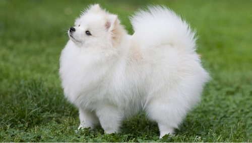

It was a big surprise for me and my brothers when my aunt bought us a puppy as a gift. My mom was not sure if we kids will be able to take care of something that needs constant attention. To her surprise we did pretty good job in the first week.
Well all I am talking is about our dog Sezy. It was a Pomeranian breed. Sezy was just 8 weeks old when he came to us. when he came to our house as a puppy he was like a little furry doll any kid would play with. His fur coat is as white as snow angel. Being a young kid when a puppy came, all i can think is to play with him when ever i get time.
It was a great responsibility for all us kids to take care of Sezy all the time.Training him took quite a bit of time. Sezy was very agile. My brothers used to train him with all the ball games, potty training, running, jumping etc... I used to pamper Sezy all the time. He would cuddle and run in circles when ever he see's me. He wanted his fur to be brushed all the time. we used to play hide and seek all the time in and around our house. It was like we get our daily exercise by playing with him. He never gave up in any game we played. Sezy had grown big and was 12 years old when we had to lose him. He was no more.
It was like our world had suddenly stopped when we knew that Sezy would'nt be there with us anymore. I could'nt concentrate on things for quite a bit. Our family could clearly see what we were missing, the fun, the laughter. we missed all the barking, all the running and getting on around our legs act, cuddles.
It took quite a bit of time to be back on track, but a loss is a loss, can never forget Sezy and he will always be in our heart and mind.